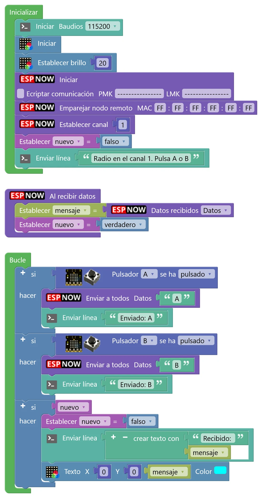
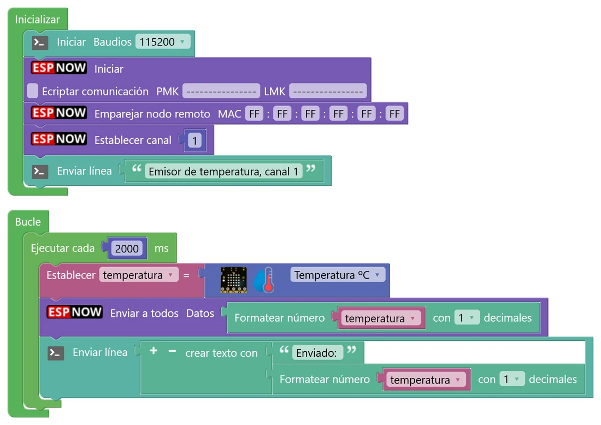
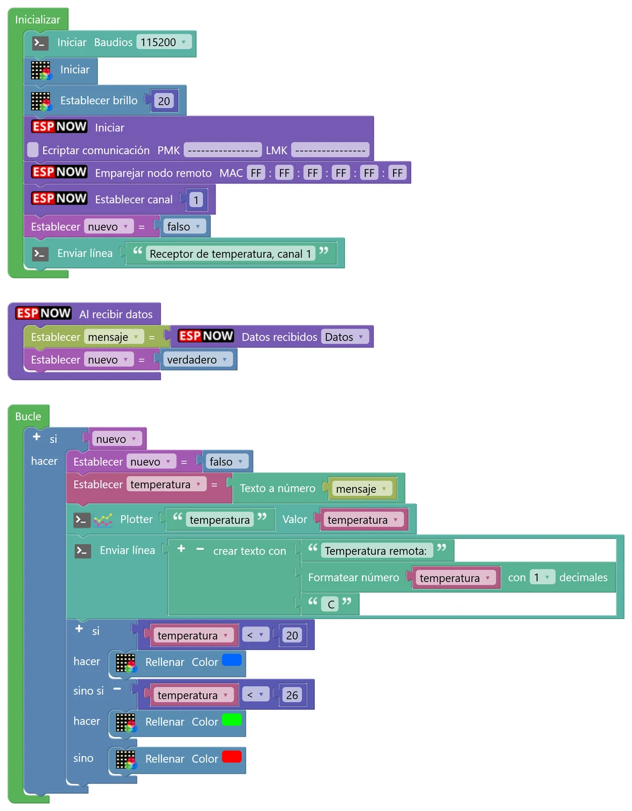
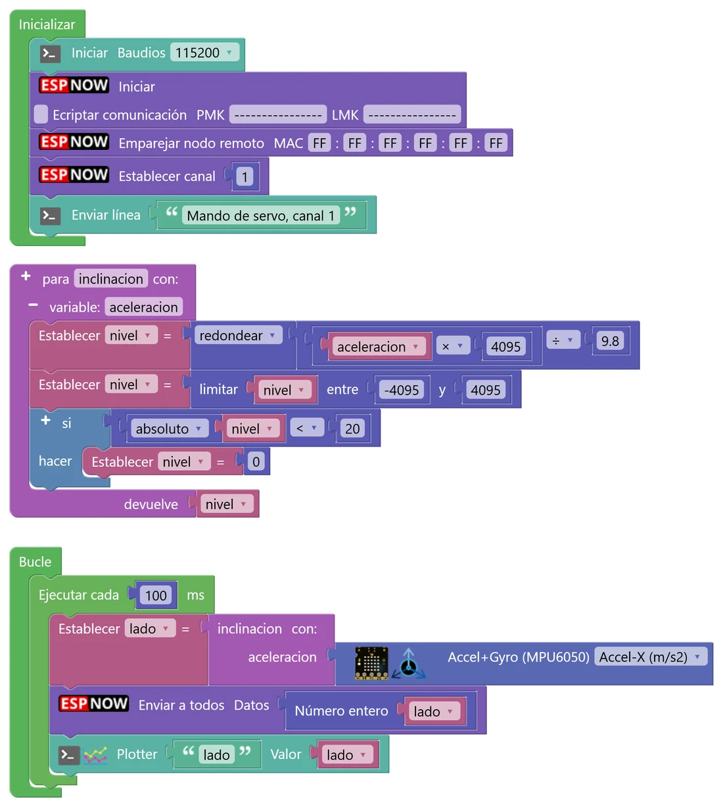
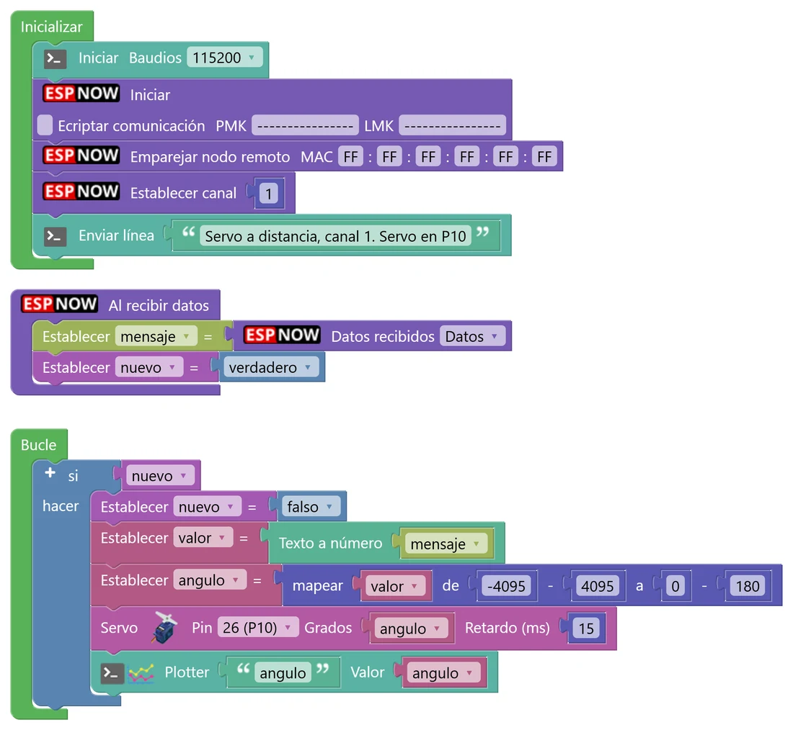

N10 Placas que hablan entre sí (ESP-NOW)
El ESP32 de tu placa lleva una radio dentro: la misma que usa para el WiFi. Con ESP-NOW, dos o más placas se envían mensajes cortos directamente, sin router ni internet, en milésimas de segundo. En este nivel harás un «walkie-talkie» de botones, un termómetro a distancia y un mando que mueve un servo desde otra placa. Es la base de muchos proyectos de robótica: mandos, sensores repartidos por el aula, robots que se coordinan…
🎯 Objetivo
- Entender cómo se comunican dos placas por radio: canal, dirección MAC y difusión.
- Enviar y recibir mensajes de texto con los bloques de ESP-NOW.
- Usar el patrón del buzón: el evento guarda el mensaje y el Bucle lo procesa.
- Convertir los mensajes en números para usarlos en cálculos, gráficas y actuadores.
🧠 Antes de empezar
Para este nivel hacen falta dos placas: la tuya y la de otra pareja (o dos de vuestro grupo). ESP-NOW es un sistema de comunicación creado por Espressif, el fabricante del ESP32. Envía mensajes cortos (hasta 250 caracteres) por la banda de 2,4 GHz, la del WiFi, con un alcance de unas decenas de metros dentro de un edificio.
💡 Para entenderlo: los walkie-talkies
ESP-NOW se parece mucho a unos walkie-talkies. Para oíros, los dos tenéis que estar en el mismo canal. Cuando hablas, te oyen todos los que estén en ese canal (eso es la difusión), no solo tu compañero. Y no hace falta ninguna antena ni operador en medio: los aparatos hablan directamente entre ellos. Además, cada placa tiene un número de serie único, su dirección MAC (como 3C:61:05:A2:1B:F4), que permite, si se quiere, enviar un mensaje a una placa concreta.
Los bloques
Están en Comunicaciones › ESP-NOW. Para empezar, siempre los mismos tres bloques en Inicializar:
| Bloque | Qué hace |
|---|---|
| Iniciar | Enciende la radio en modo ESP-NOW. Deja sin marcar «Encriptar comunicación». |
| Emparejar nodo remoto MAC FF:FF:FF:FF:FF:FF | Apunta en la «agenda» de la placa la dirección especial FF:FF:FF:FF:FF:FF, que significa «todos». Sin este paso, «Enviar a todos» no envía nada. |
| Establecer canal | El canal de vuestro grupo (1 a 13). |
Para enviar: Enviar a todos con el texto que quieras. Para recibir: el bloque Al recibir datos, que va suelto en el espacio de trabajo (como una función) y se ejecuta solo cuando llega un mensaje. Dentro, Datos recibidos te da el texto del mensaje (o, si cambias el desplegable, la MAC de quien lo envió).
💡 Para entenderlo: el buzón
«Al recibir datos» se ejecuta a la vez que el Bucle, en paralelo, en el momento en que llega el mensaje. Si dentro pones cosas lentas (pitar, esperar, dibujar), puede pisarse con lo que esté haciendo el Bucle. Por eso usamos el patrón del buzón: el evento solo deja la carta (guarda el mensaje en una variable de texto y pone una variable nuevo a verdadero) y el Bucle, cuando pasa por ahí, mira el buzón: si nuevo es verdadero, lo pone a falso y procesa el mensaje con calma.
🐍 La misma idea en Python
mensaje = "" nuevo = False def al_recibir(datos): # lo llama la radio global mensaje, nuevo mensaje = datos nuevo = True while True: # el Bucle if nuevo: nuevo = False print("Recibido:", mensaje)
📦 Los mensajes son texto
Por ESP-NOW viajan textos. Si envías una temperatura, sale «23.5» (con punto), y al otro lado llega el texto «23.5», no el número. Para hacer cuentas o compararlo hay que convertirlo con Texto a número (Texto). Para comparar textos (por ejemplo, si ha llegado «A»), usa el bloque de comparar textos de Texto, no el de números.
🧩 Programa 1 · Mensajes por radio
El mismo programa en las dos placas: al pulsar A, una placa envía «A»; al pulsar B, envía «B». La otra placa lo muestra en su matriz y en la consola. Es vuestro primer walkie-talkie.

🛠️ Móntalo paso a paso
- Variables: mensaje de tipo Texto y nuevo de tipo Boolean (Variables).
- En Inicializar: consola, matriz y brillo; los tres bloques de ESP-NOW (Iniciar, Emparejar con FF en las seis casillas y Establecer canal con vuestro número); y nuevo = falso.
- Suelto en el espacio de trabajo, el bloque Al recibir datos. Dentro: mensaje = Datos recibidos (opción Datos) y nuevo = verdadero. Nada más.
- En Bucle: si se ha pulsado A → Enviar a todos «A» y un Enviar línea; lo mismo con B.
- Otro si con la variable nuevo como condición: nuevo = falso, Enviar línea «Recibido: » + mensaje y Texto (micro:STEAMakers › NeoMatrix) con el mensaje.
- Sube el mismo programa a las dos placas y prueba. Después, poned canales distintos en cada una: ¿qué pasa?
- ¿Cuánto tarda en aparecer la letra en la otra placa? ¿Se nota algún retraso?
- Poned canales distintos en cada placa. ¿Llegan los mensajes? ¿Y si otra pareja está en vuestro canal?
- Alejad las placas poco a poco (pasillo, otra aula). ¿Hasta dónde llegan los mensajes? ¿Qué cosas los cortan (paredes, el cuerpo, una caja metálica)?
- Cambia «Datos recibidos» a la opción MAC y envíala por la consola. ¿Cuál es la MAC de la placa de tu compañero? ¿Y la tuya?
🧩 Programa 2 · Termómetro a distancia
Ahora cada placa tiene un papel: el emisor mide la temperatura cada 2 segundos y la envía; el receptor la convierte en número, la manda al Serial Plotter y pone su matriz azul, verde o roja. Imagina el emisor en el patio y el receptor en clase.


🛠️ Móntalo paso a paso
- Emisor: en Inicializar, consola y los tres bloques de ESP-NOW. En Bucle, Ejecutar cada 2000 ms (N8): temperatura = sensor de temperatura; Enviar a todos con Formatear número(temperatura, 1 decimal); y un Enviar línea para ver qué sale.
- Receptor: los mismos tres bloques y el buzón (variables mensaje y nuevo, y el bloque Al recibir datos) como en el programa 1.
- En el Bucle del receptor: si nuevo → nuevo = falso; temperatura = Texto a número(mensaje); Plotter de temperatura; Enviar línea; y un si / sino si / sino para el color de la matriz.
- ¿Qué texto exacto envía el emisor? ¿Qué pasaría en el receptor si te olvidaras del «Texto a número» y compararas el mensaje con 20?
- Apaga el emisor. ¿Qué hace el receptor? ¿Cómo sabría el receptor que el emisor lleva mucho rato sin hablar? (Pista: el cronómetro o millis del N8.)
- Si otra pareja pone su emisor en vuestro canal, ¿qué verá vuestro receptor? ¿Cómo podríais distinguir vuestros mensajes de los suyos?
🧩 Programa 3 · Un servo a distancia
Juntamos tres niveles: el emisor usa tu función inclinacion del N7 y envía el lado (de −4095 a 4095) diez veces por segundo; el receptor lo convierte en un ángulo de 0º a 180º y mueve el servo del N9. Inclinas una placa y el servo de la otra la sigue: así funcionan los mandos de radiocontrol.


🛠️ Móntalo paso a paso
- Emisor: copia tu función inclinacion del N7. En Bucle, Ejecutar cada 100 ms: lado = inclinacion(Accel-X) y Enviar a todos el Número entero de lado (así viaja «1532» en vez de «1532.00»).
- Receptor: monta el servo como en el N9 (V2 en 5 V, servo en P10, shield alimentada). Buzón como siempre.
- En el Bucle del receptor: si nuevo → valor = Texto a número(mensaje); angulo = mapear(valor, −4095, 4095, 0, 180); bloque Servo en P10 con ese ángulo.
0- ¿Cuántos mensajes por segundo envía el emisor? ¿Qué notarías en el servo si enviara uno por segundo? ¿Y si enviara mil?
- Cuando la placa está plana, ¿qué ángulo tiene el servo? ¿Por qué? ¿Ayuda aquí la zona muerta del N7?
- Haz que el emisor envíe también el frente y que el receptor mueva un segundo servo. ¿Cómo meterías los dos números en un solo mensaje y los separarías al otro lado?
🚀 Retos
Timbre inalámbrico
Un solo programa para las dos placas: al pulsar A se envía «DING» y la otra placa pita y se pone amarilla medio segundo. Comprueba que el mensaje es exactamente «DING» antes de sonar (bloque de comparar textos), para que otros mensajes no hagan sonar el timbre.
La urna
Una placa hace de urna y varias placas votan con el programa 1 (A o B). La urna cuenta los votos de cada opción y los dibuja como dos barras en la matriz, con la regla de las barras del N6. Al pulsar A en la urna, la votación vuelve a empezar.
¿Me has oído?
La radio no es perfecta: un mensaje puede perderse. Haz que el receptor del programa 2 conteste «OK» cada vez que recibe una temperatura, y que el emisor espere esa respuesta: si el «OK» llega antes de 500 ms, la matriz se pone verde; si no, roja. Usa millis o el cronómetro para medir el tiempo de espera. Así funcionan los acuses de recibo de las aplicaciones de mensajería.
🔧 Bajo el capó: cómo viaja un mensaje
#include <esp_now.h> #include "WiFi.h" void setup() { WiFi.mode(WIFI_STA); // la radio, sin conectarse a ningún router if (esp_now_init() != ESP_OK) ESP.restart(); esp_now_register_recv_cb(espnow_data_rx); // qué hacer al recibir espnow_add_peer(0xFF,0xFF,0xFF,0xFF,0xFF,0xFF); // «todos» en la agenda esp_wifi_set_channel(1, WIFI_SECOND_CHAN_NONE); } void espnow_send_broadcast(String _data) { esp_now_send(0, (uint8_t *) _data.c_str(), _data.length()); // 0 = a toda la agenda }
📨 Enviar y recibir
esp_now_send con la dirección 0 envía el mensaje a todas las placas de la agenda. Por eso hace falta emparejar FF:FF:FF:FF:FF:FF, la dirección de difusión: es la forma de decir «a cualquiera que escuche». Para enviar a una placa concreta se empareja su MAC y se usa «Enviar a» con esa dirección.
Cuando llega un mensaje, la radio llama a una función que copia el texto y lo mete en una cola; otra tarea del sistema lo saca de la cola y ejecuta tu bloque «Al recibir datos». Es otra tarea de FreeRTOS, como la del medidor de energía del N8: por eso funciona en paralelo al Bucle y conviene que sea corta.
🔐 ¿Y la seguridad?
Los mensajes viajan sin cifrar: cualquier placa en vuestro canal puede leerlos y también enviaros mensajes falsos. Para un mando de un robot de verdad, eso es un problema de ciberseguridad. ESP-NOW permite cifrar (casilla «Encriptar comunicación» con dos claves, PMK y LMK), pero solo entre placas emparejadas por su MAC, no en difusión.
Un detalle práctico: el bloque ¿Último envío correcto? genera, en la versión actual de STEAMakersBlocks, un código que no compila. No lo uses; para saber si un mensaje ha llegado, pide al receptor que conteste, como en el reto pro.
🔎 ¿Lo has entendido?
Cuando termines, haz una captura con tu puntuación para el porfolio.
📁 Al porfolio
- Capturas de los programas (emisor y receptor) y del Serial Plotter del receptor del programa 2.
- Un esquema sencillo de vuestro sistema: qué placa envía, qué mensaje, cada cuánto y qué hace la que recibe.
- Tu explicación del patrón del buzón con tus palabras.
- La prueba de alcance: hasta dónde llegaron los mensajes y qué los cortaba.
- Tus respuestas a «Interpreta lo que ves».
- Vídeo corto del servo a distancia (o del reto) con las dos placas a la vista.
- El reto que hayas hecho y captura de tu resultado en «¿Lo has entendido?».